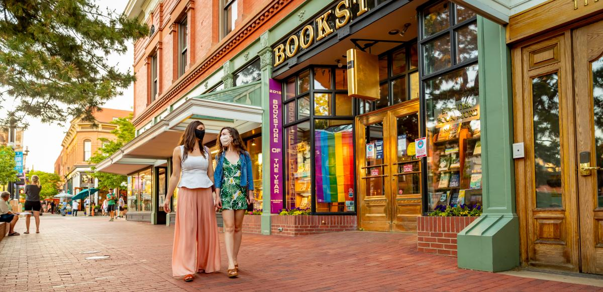
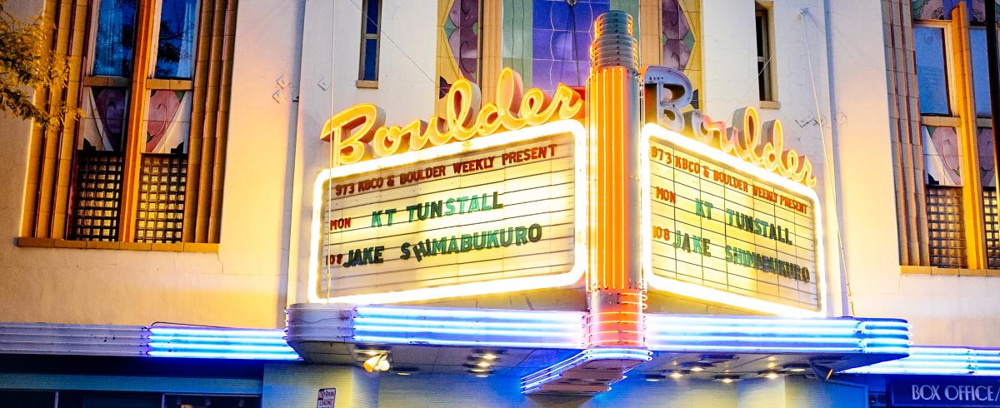

Boulder's beloved Flatirons that you can see anywhere in Boulder.
Beyond the beautiful nature views Boulder and all of Colorado provide, here are some highlights!

Two women walking down the famous brick-paved Pearl Street in Boulder
Pearl Street is a historic walking-mall of sorts. It features storefronts, restaurants, and is all around a beautiful place to stroll and people-watch.
Boulder's beloved Flatirons that you can see anywhere in Boulder.
Able to be seen from anywhere in Boulder, the Flatirons provides many hiking trails and offers a beautiful way to get involved with nature.

Historic theater that has been a stage for film and music since 1906.
The Boulder Theater is a go to for music and theatre in Boulder. Some big-name acts like Sheryl Crow and Shawn Colvin have performed here.
Homepage Travel Stories How to get Started About Me Restaurants Things to Do